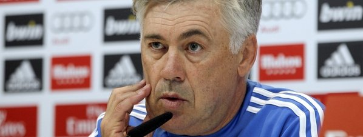

Ancelotti es perro viajo. Pocas cosas del mundo del fútbol se le escapan al veterano técnico italiano. Domina los vestuarios, los despachos y los entornos. Esconde sus cartas para ganar la partida en el momento adecuado. Y ahora no es tiempo para hablar de títulos. Es la hora de afrontar un partido complicado en el Vicente Calderón. Todo un Atlético de Madrid-Real Madrid con el liderato de la Liga en juego.

"Tenemos que hacer lo máximo, defensivo y ofensivo. Jugar con coraje y personalidad. Para ganar al Atlético tienes que hacer lo mejor", asume el italiano, consciente de que nadie ha ganado en el Calderón esta temporada. Pero no le afectan los números, ni los contrarios ni los favorables. "No creo que la estadística afecte en este tipo de partidos. No teníamos buena racha en Alemania antes del otro día", apuntó.
El entrenador del Real Madrid espera un derbi "con mucha intensidad, difícil, complicado". "No creo que sea un partido feo", analizó. Carlo Ancelotti asume que su equipo es el favorito, aunque recordó que el Atlético tiene la ventaja de jugar en casa. "Tenemos tres puntos de ventaja y se puede decir que Real Madrid es favorito, pero tenemos que gestionar la presión, regularla y nada más", dijo.
De lo que no quiere ni oír hablar es de la posibilidad de ganar la Liga, la Copa y la Champions League esta campaña. "No estamos pensando en el triplete. Tenemos muchos partidos y en estos momentos tenemos que estar focalizados pensando en el partido a partido. Creo que no es bueno pensar en esto", afirmó.
El Real Madrid, que está invicto desde su derrota en el Camp Nou a finales de octubre, llega con "confianza" al partido ante el Atlético. En esa racha han sido básicos Xabi Alonso y Karim Benzema. "Xabi tiene la calidad y la inteligencia de jugar en todos los sistemas. Los delanteros ahora están trabajando muy bien y está muy bien focalizado en la recuperación del balón y presionar arriba. Xabi ayuda a todo el equipo. Por esto defensivamente es muy importante y en el equilibrio del equipo", analizó.
Respecto al galo, Ancelotti considera que no es "sólo un delantero, también da asistencias y ayuda en la posesión". Y ahora, además, está "mostrando una habilidad fantástica para marcar" con sus seis goles en los últimos cinco partidos. Al lado de Benzema, Gareth Bale está "en una condición mental y física muy buena", opinó el técnico blanco. "Después del trabajo contra el Elche, jugó muy bien frente Schalke. Está mejorando su confianza", añadió.
Almería, 1 mar (EFE).- El entrenador de la UD Almería, Francisco Rodríguez, ha reconocido hoy, ante el partido que disputarán mañana en el Camp Nou ante el FC Barcelona, que "daría lo que fuese" por un empate.
"Somos realistas y sabemos que un equipo como el Almería, que visita el Camp Nou en el momento de la temporada en el que estamos, donde se está jugando tanto todo el mundo, es complicado", ha señalado el técnico almeriense a los periodistas tras la sesión de entrenamientos de hoy.
Francisco ha advertido de que no ha habido cambios durante la semana para encarar el partido de mañana y que han tratado de que sea "normal, con la misma dinámica de entrenamiento, la misma dinámica de vídeos".
"Cambiaremos algo en nuestra manera de jugar, pero con balón intentaremos tener iniciativa y ser ambiciosos y todo eso con el respeto que conlleva ir al mejor campo de la Liga", ha relatado.
El preparador del conjunto andaluz ha admitido que son "realistas" y que saben que "la mayoría del tiempo habrá que estar detrás del balón".
"El Barça viene de perder en Liga en el último partido (San Sebastián) y nosotros con dos puntos más con el Málaga (0-0 la pasada jornada en Almería) hubiéramos ido más tranquilos, pero la imagen debe ser buena", ha insistido.
Sobre el rival, Francisco ha comentado que "en el Camp Nou todos han jugado de diferentes maneras, desde los más grandes hasta los de la 'liga' del Almería. Unos han propuesto tener el balón, otros presionar más arriba o estar atrás y al final a todos les ha pasado lo mismo, que al final el Barça tiene oportunidades de gol".
"El día que ha estado afortunado en el inicio ha ganado con solvencia y el día que no ha estado acertado ha sufrido como el día del Valencia (perdió 2-3), pero ese día, en la primera parte, tuvo oportunidades para haber sentenciado con un marcador holgado", ha subrayado.
Francisco también se ha solidarizado con su colega en el Barcelona, el argentino Gerardo 'Tata' Martino, por las críticas que recibe y ha dicho que "los resultados son los que mandan y vienen de perder y de no tener un juego tan fluido, pero el Barcelona es un muy buen equipo y tienen un muy buen entrenador".
Sergio Martín-Serrano Delgado